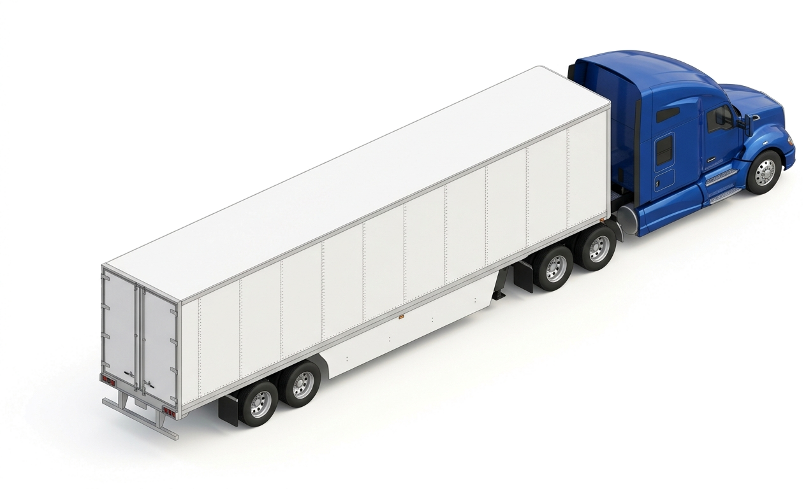

Laws for Sharing the Road: Bikes, Trucks & Horses
Texas roadways host high-mass 18-wheelers with massive No-Zones, vulnerable pedal cyclists with full vehicular rights under TTC § 551.101, and equestrian riders entitled to quiet passage under TTC § 542.003. Mastering their dynamics prevents catastrophic collisions.

Under Texas law, bicycles have full vehicular rights on public roadways. When interacting with large trucks, never linger in the four commercial "No-Zones" or squeeze into the right lane during wide turns.
Shared Roadway Operational Matrix
Select a category below to inspect bicycle right-of-way laws, commercial truck blind spot No-Zones, trailer off-tracking risks, and equestrian safety standards.




Commercial Motor Vehicles (CMVs) have 4 massive blind spots called "No-Zones": directly in front (20 ft), behind the trailer (200 ft), along the left cab, and especially along the entire right side extending across two highway lanes. Under Texas Transportation Code § 545.054, an operator passing a CMV must not return to the original travel lane until the entire front cab and headlights of the truck are fully visible in the interior rearview mirror.
6 ft for commercial trucks.
No-Zone behind trailer.
Prevents animal panic.
TX Transportation Code § 551.101: A person operating a bicycle has the rights and duties applicable to a driver operating a vehicle under this subtitle, except a special regulation in this chapter or a regulation that by its nature cannot apply.
Multi-User Highway Sharing Dynamics
Four critical operational dynamics for interacting safely with commercial carriers, cyclists, and equestrian roadway users.
Developmental Progression: Mixed-Fleet Sharing Sequence
The three systematic phases of maneuvering around large commercial carriers, non-motorized vehicles, and animals on Texas roads.
Scan Blind Spots
Identify truck mirrors; if you can't see the driver, move out of their blind No-Zone.
Respect Turns
Never pass a turning truck on the right; anticipate trailer off-tracking over curbs.
Buffer & Silence
Give 3+ ft to cyclists; pass horses slowly and silently without revving or honking.
Under Texas Transportation Code § 551.101, what legal status and rights do bicyclists hold on roadways?
Select the single correct answer under Texas Transportation Code § 551.101:
Bicyclists are legitimate roadway users with all rights and duties of drivers—always give 3+ feet of passing clearance and never cut in front of them to turn right. Stay out of commercial truck blind spots (front, rear, and sides), avoid the right side of turning trucks due to off-tracking, and pass equestrian riders quietly.